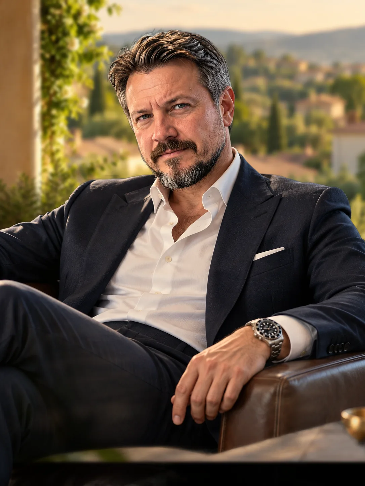

Понимать. Решать. Применять
Вернёмся туда, где потерялась логика
Укажите тему или опишите трудность своими словами

Новая тема опирается на предыдущую, а в основании остались нерешённые вопросы
сначала с ними не до конца разобрались
потом дроби встретились в уравнениях
затем и в физике. Судя по настойчивости, дроби намерены познакомиться поближе
Расскажите нам об этом. Необязательно сразу знать название нужного параграфа
разобраться с текущими темами, укрепить основу и понять логику решения задач
обсудить его трудности и подобрать подходящую поддержку
повторить физику и математику, на которые опираются учебные дисциплины
вернуться к нужным темам и связать их с новой учебной или рабочей задачей
понять, как устроен мир. Это вполне достаточная причина. Сложных фраз для оправдания любопытства искать не требуется
Так выглядит понимание, к которому стоит стремиться
смотрите на условие и можете объяснить, что дано
понимаете, почему выбираете определённый способ решения
например, велосипедист едет быстрее самолёта, хотя в условии даже не сказано, что он суперчемпион
можете задать точный вопрос там, где ещё нужна помощь